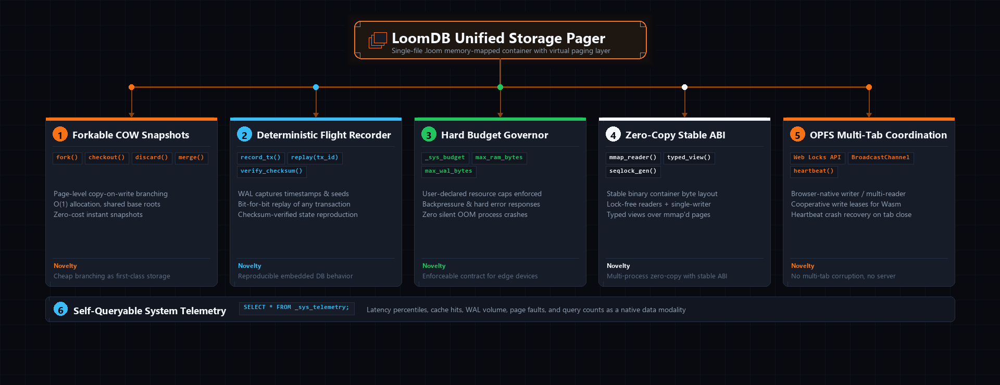

LoomDB is a forkable, deterministic, budget-enforced, zero-copy embedded multi-modal database with a stable single-file ABI and native OPFS multi-tab coordination.
Weaving SQL Relational, JSON Documents, HNSW AI Vectors, and Time-Series Streams into a single portable .loom file with sub-512 KB idle RAM.
Type loom in your command prompt to enter the database workspace. Test the interactive sandbox below.
(Live web sandbox is limited to 3 test queries — download LoomDB for unrestricted local execution.)
.loom ContainerNo directory sprawl. No orphaned WAL files. All five engines operate within a unified 64-bit virtual paging container.

.loom with virtual paging, O(1) COW branching, and lock-free seqlock read path.
View Full Resolution ↗
Page-level fork(), checkout(), and discard() inside the single .loom file. Zero-copy instantaneous branches allocate only upon write.
Lightweight WAL records execution entropy: timestamps, random seeds, and inputs. Replay any mutation sequence bit-for-bit to debug edge failures.
Declare strict caps: max_ram, max_wal, max_io_per_query. Enforced via backpressure and hard errors, never best-effort degradation.
Lock-free readers + single-writer protocol. Returns typed byte views over memory-mapped pages without copying rows into heap memory.
Browser-native single-writer / multi-reader coordination over Origin Private File System via Web Locks, transaction queues, and crash recovery.
Latency percentiles, cache hit ratios, page faults, and WAL bytes stored in a native time-series table. Queryable using standard SQL.
Existing databases force you into silos: Postgres for tables, Mongo for JSON, Pinecone for vectors, Influx for telemetry. Here is how LoomDB transforms distinct engineering domains:
LoomDB embeds high-dimensional HNSW vector search directly inside your AI agent process in under 512 KB RAM. Zero network latency, instant semantic cosine retrieval, and zero cloud dependency.
LoomDB gives desktop tools and CLI utilities a single-file portable database that natively understands JSON documents, vector embeddings, and real-time live push queries via CDC.
LoomDB's Micro Profile consumes less than 512 KB RAM and zero CPU threads when idle. Built-in Delta-CRDTs allow edge nodes to write offline and automatically sync when connectivity returns.
LoomDB combines an in-container circular WAL with Gorilla XOR float compression, reducing numeric metric storage by 85% and achieving sequential NVMe write throughput.
Start 100% schemaless with LoomBSON collections. As your models mature, add strict relational schema enforcement contracts dynamically without downtime or database migration rewrites.
LoomDB encrypts data blocks per tenant. Deleting a tenant's cryptographic key immediately renders all their historical data unrecoverable across all SSTables and backups with zero CPU vacuum overhead.
Engineered from scratch to combine the lightweight embeddability of SQLite with the vector intelligence of modern AI stores.
| Database | Idle RAM Footprint | Binary Weight | Storage Model | Native AI Vectors | Document JSON | Live Query CDC |
|---|---|---|---|---|---|---|
| LoomDB | < 512 KB | < 850 KB | Single .loom file |
Yes (SIMD Fused) | Yes (LoomBSON) | Yes (Native) |
| CrepeDB / MoltenDB | ~8 – 20 MB | ~6 – 14 MB | Multi-file / Segmented | Add-on only | Limited | Polling only |
| SQLite | ~4 MB | ~800 KB | Single .db file |
No (Plugin required) | Limited JSON1 | No |
| DuckDB | ~30 MB | ~18 MB | Single .duckdb file |
Experimental | Basic | No |
| MongoDB | ~350 MB | ~120 MB | Clustered directory | Add-on only | Yes (BSON) | Change streams |
| Pinecone / Qdrant | ~200 MB | ~45 MB | Clustered directory | Yes | Metadata only | No |
LoomDB runs as an embedded in-process library (zero network overhead) or as a standalone local server. Select your stack:
// Open or create a single-file portable container
let db = loom_core::LoomDB::open("./app.loom")?;
// Insert document with high-dimensional vector embedding
db.collection("memories").insert(serde_json::json!({
"id": "mem_01",
"topic": "High-Performance Rust Storage",
"notes": "LoomDB achieves sub-512KB idle RAM overhead.",
"embedding": [0.12, 0.45, -0.22, 0.81]
}))?;
// Hybrid single-pass vector distance query with relational filter
let hits = db.query(
"SELECT id, topic, notes FROM memories
WHERE topic LIKE '%Rust%'
ORDER BY cosine_similarity(embedding, [0.12, 0.45, -0.22, 0.81]) DESC
LIMIT 1;"
)?;
println!("Found: {:?}", hits);
irm https://loomdb.dev/install.ps1 | iex
Standard Windows Setup Wizard dialog box (Next >, Browse..., Cancel). Automatically configures LoomDB, updates PATH, and optionally installs service.
Single standalone installer script. Installs binary, configures zsh PATH, and registers launchd daemon.
Single standalone installer. Installs binary to path, updates bashrc/profile, and registers systemd unit.